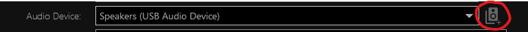
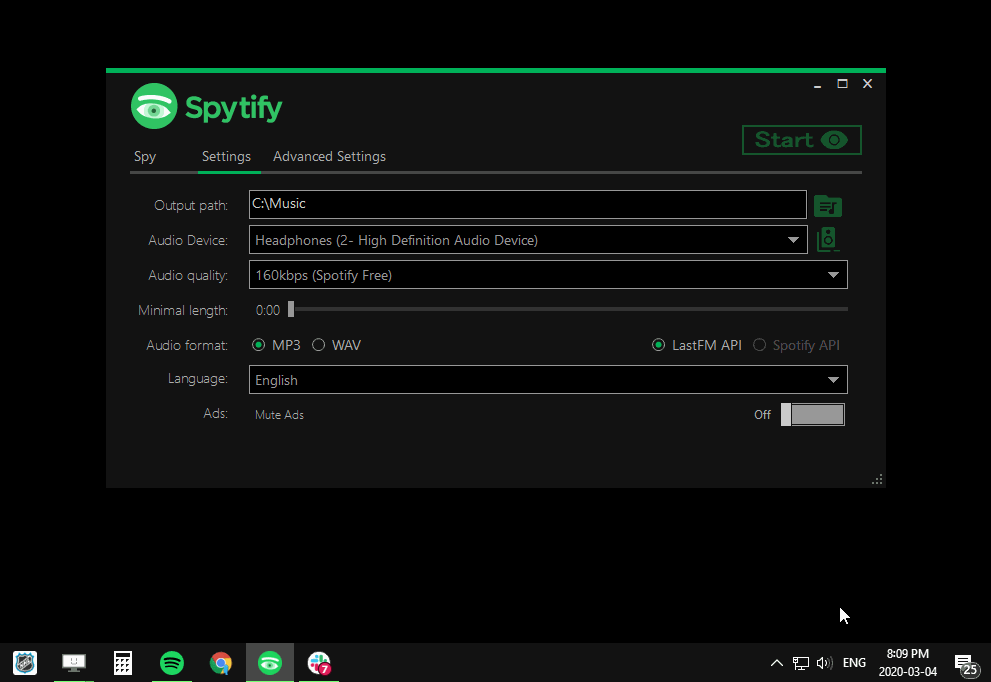
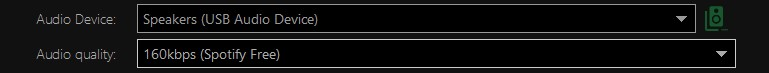
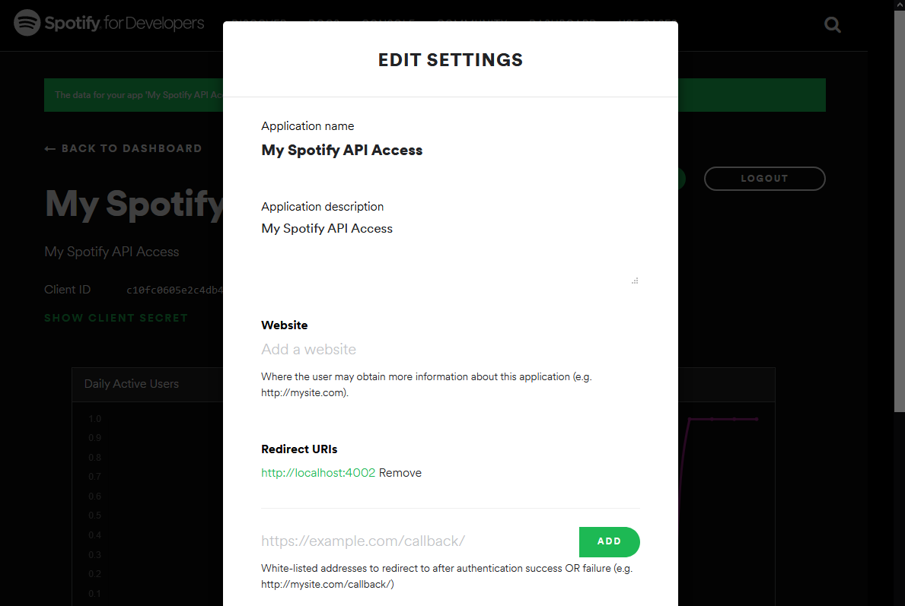
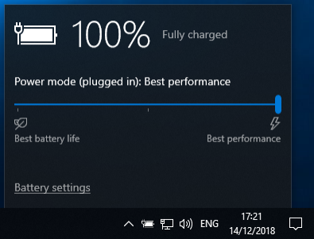

Which audio endpoint device should I use for best recording quality? (Virtual Audio Cable)
In Spytify Settings tab, under Audio Device, you will find a list of hardware devices that emit sounds, but you can also add virtual devices to this list.
Virtual devices don’t have to do the big round-trip to render sound to you through a physical device, they can bypass that and keep the original audio quality much longer when sending it to different endpoints.
Below is the difference of using a normal/low end audio device versus a decent/high end audio device versus a virtual device, all recorded at
2CH 24bits 44kHz @320kpbsusing a Michael Bubble xmas song.
Spytify comes with a Virtual device that you can install from the app, or download it yourself: Virtual Audio Cable Device Go to Settings, at the far right of Audio Device, click on the Speakers button and the click on Install Driver

After installing the driver, it will appear in the audio device list.
The selected audio device has to be the one that Spotify is set on.
If you change your default audio output (Audio icon in the taskbar) to this device, you will be able to record better quality with Spotify/Spytify. However, you won’t be able to hear anything since it’s a virtual device that has no physical output.
The way to use it properly is to isolate Spotify and Spytify on this virtual device to record better audio, and you can use the Spotify web app with a different account for your daily music needs while your playlist is being recorded, or just let Spytify record overnight.
How to isolate Spotify and Spytify to a different audio endpoint device to eliminate noise?
By using the Spytify setting Audio Device, you can move Spytify to a different audio endpoint and use the Windows 10 setting to move Spotify to the same audio endpoint.
If you need a better audio endpoint because your sound card has issue with volume control while recording or encodes bad mp3 qualities, you can install a virtual device (like Virtual Audio Cable that comes with Spytify) to have recordings closer to the original Spotify quality.
So, to move both apps to a different endpoint:
- Press Windows key and type Sound mixer options, you should land on the setting page titled App volume and device preferences.
- Make sure Spotify is playing and set the app to the desired endpoint using the Output select list.
- Restart Spotify. Spotify and Spytify should now be isolated from any undesired sound.
If you can’t find the Windows 10 setting, try the section Windows 10 Settings 🡂 System 🡂 Sound, scroll down to the Advanced sound options 🡂 App volume and device preferences setting.

How to keep the same order than the recorded playlist on my recordings?
The recording order number option 017_Artist_-_Title.mp3 is useful if you want to burn songs to CDs and that your MP3 player, like those in cars, orders songs by filename.
You will get a CD with songs ordered in the same order than the album or the one shown by Spotify. If it’s a playlist, order it first on Spotify before recording it.

How can I maximize the audio quality of my recordings?
Spytify relies on your audio device quality to record audio files. If your choosen audio endpoint device in Spytify produces bad .mp3 quality, I suggest you :
- Use another device like the your main PC sound board.
- Avoid using a bluetooth audio device.
- Avoid using a cheap external usb sound card.
- Use a different computer/laptop if it has a better sound card.
- Install Virtual Audio Cable that comes with Spytify and connect both apps with it.
When encoding, .mp3 has a limitation of 2 channels (stereo) and a sample rate of 44,000 Hz, compare to .wav that has less limations.
You can increase the bitrate in Spytify settings, but if you have Spotify Free it normally delivers music to 160kbps and 320kbps on Premium.

Using Spotify desktop app, click on your profile and go to your settings.
In Music Quality section you will find:
- Streaming quality should be set to Very High (or High with Spotify Free).
- Normalize Volume should be turned on.
Click on Show advanced settings:
- Turn off Crossfade songs in the Playback section.
- Turn off Allow smooth transitions between songs in a playlist in Automix section.
- Turn on Enable hardware acceleration in Compatibility section.
If you want to avoid recording suggested songs by Spotify when the music ends.
- Turn off Autoplay similar songs when your music ends in Autoplay section.
Don’t forget to max out the Spotify volume bar inner-app (bottom-right corner).

How to use Spotify API to get better (more accurate) media metadata and album cover?
You can switch between last.fm API to Spotify API to get more accurate metadata, but it requires an account to be able to gather media info from Spotify.
Go to Spotify Developer Dashboard, log in using your Spotify account and register a new local application:

Once created, click on your new spotify application and click on Edit the settings

Add a Redirect URI with the value http://localhost:4002, click on Add, and on Save at the bottom.

On your app dashboard, copy your Client ID and Client Secret info to Spytify Spotify API Credentials setting form using the key 🔑 icon:
Expand the Show Client Secret on the dashboard to reveal the key.

How to reduce my audio endpoint quality for mp3 encoding since multi-channel is not supported?
Multi channels audio endpoint device are not supported when encoding to MP3, it must be at least stereo channels with a sample rate of 44,000 Hz. You can change an audio endpoint channels configuration by:
- Typing Sound Settings in Windows menu
- On the right side bar, use the link Sound Control Panel
- Find and select your audio endpoint device in the list
- Click on Configure
- Make sure Stereo channels is selected, otherwise select it, then applies the changes.

Why am I hearing background/outside noise on my recordings?
Any background noises can be removed by isolating both apps on a different audio device or using a virtual audio cable that links both app together and reduces the quality loss a lot.
Make sure Spytify successfully muted all applications in the Volume Mixer while recording. Only Spotify and Spytify should not be muted.

Cracking/popping sounds may come from :
- Cracking sounds can be heard while playing songs on Spotify and ends up being recorded to the recording file.
- Can be caused by your computer using a low consumption power plan settings that reduces the cpu max performance and impacts at the same time the audio encoding.
On Windows set your power plan to performance and in the taskbar set the performance to 100% (if you are on a laptop for instance).

Why Spotify now only plays a part of my tracks that I usually play on the app?
By default, Spotify looks for local music files before playing a track if the option is enabled in Spotify settings. If it finds one that matches the metadata of the current track, it will play the local one instead. Only part of tracks play because the recording probably stop before the end of the song, resulting in a partial recorded track.
You can display local files in your Spotify Desktop app settings in the Local Files section with the toggle Show Local Files.
Just delete those that are incomplete tracks in your music directory or in the Spotify app to solve your issue.
You can also remove your Music library from the setting Show songs from.

Why podcasts/others are detected as ads and cannot be recorded?
Podcast, audio book and any other uncommon track type are detected as an ad. By default, Spytify won’t record those but you can change that behavior in Advanced settings by enabling Record everything. Be aware that you may record real ads at this point, and when using that option the Mute ads option will be turned off.
Also, some tracks may be identified as ads sometimes because Spotify is changing track but it did not give the proper track title to Spytify yet, maybe because is still loading or it just had an issue. When this happen, it’s often because you navigate in the app between a radio station and a playlist. Restarting the track normally fix the issue. If it happens too often, create a playlist of the songs you want to record and play it to the end.
Why some tracks overlap another track at the beginning/end of it?
Use Audacity (a free editor for audio files) to cut the audio section that you want to remove and export it back to the same audio type. Sometimes, Spotify doesn’t provide the current track info in time resulting in these results. Also, you may have better results after tweaking Spotify settings.